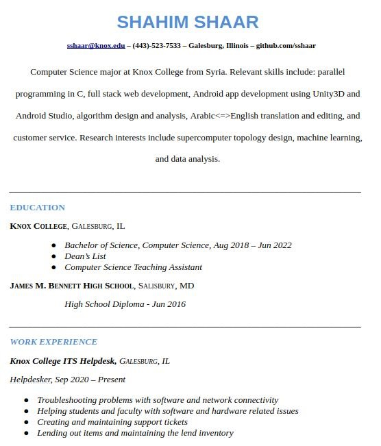

Shahim Shaar
Personal Website and Portfolio

Personal Website and Portfolio
Hello and welcome to my website! I am a 22-year-old Senior Computer Science major at Knox College. I am from Aleppo, Syria.
I am pursuing a career in software engineering, web devlopment, and academic research.
Ideally, I would like a career in either mobile or web app development. I want to be part of a team full of creative, collaborative individuals whom I can learn from and grow with.
This website is intended to showcase my personal and class projects to potential employers as well as the Github community. I intend to do a better job of organizing my repos, but this page contains explanations of some of my favorite projects.
Fun Facts: I am obsessed with/addicted to soccer, I play the Oud, and I love hip hop.
Biographical Information:
Date of Birth: 11/08/1998
Immigration Status: Asylum Seeker with Work Authorization
Email: sshaar@knox.edu
Links:
Repl.it Page
Facebook Page
Instagram Page
Resume:


Portfolio Selection:
In The Dead Of Night: Unity3D Mobile Game
Portfolio Selection:
In The Dead Of Night: Unity3D Mobile Game
____

Built this game for Android for CS 292 with Zach Gregory. the game's main character, Bulby, is positioned in the middle of the screen. Shadow enemies come in from all possible angles at an increasing spawn rate, speed, and health bar. The goal is to survive as long as possible by shooting down the shadow enemies and utilising the power-ups.
Parallelized Conway's Game of LifeWrote this parallelized simulation of Conway's Game of Life in C (see Wikipedia entry for more background on the game and its rules) using Pthreads for CS 309. The game starts with an initial grid that spawns depending on the inputted starting likelihood for each cell to be alive. With input for a full initial grid that is 4x4, we get the following game rounds outputted: